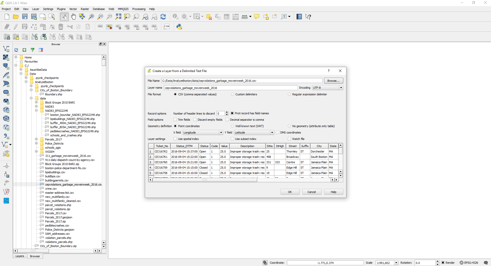
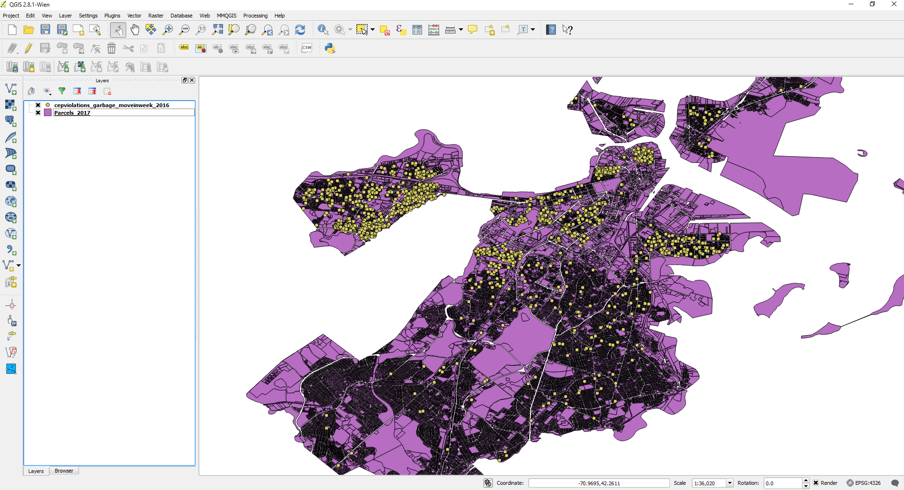
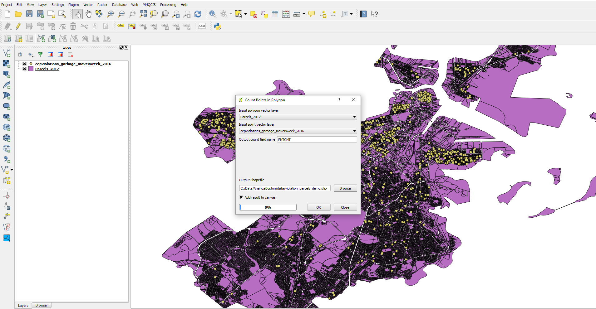
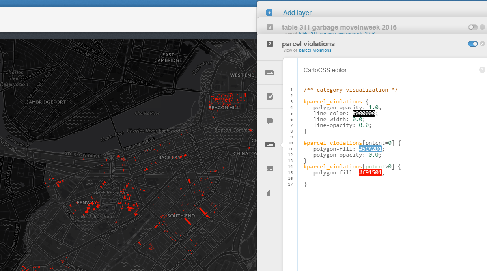
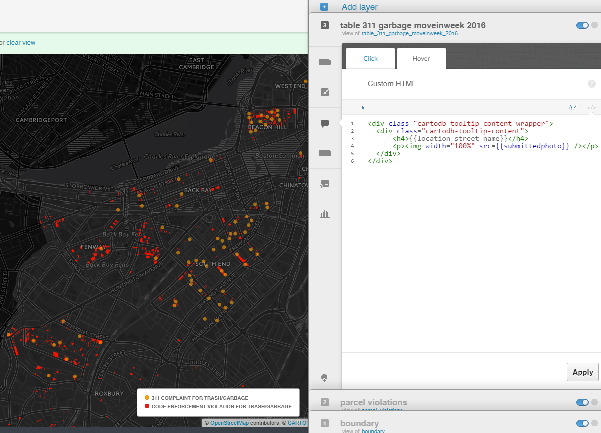

I explored the code enforcement violations, 311 service requests and crime reports using Python, pandas and jupyter notebooks. You can see the specific methods here.
The decision of which violations and 311 complaints to include in my analysis was somewhat arbitrary. I focused on categories that correspond with trash stored on residential properties. In the case of code enforcement violations, that meant excluding several types of violations, such as improper storage of trash on commercial properties, violations involving construction sites, etc. I chose to include the following categories:
Spatial analysis was accomplished with QGIS. First, I added the csv file containing the list of violations recorded during moving week. Layer -> Add layer -> Add Delimited Text Layer. Select WGS 84 (EPSG:4326) as the CRS.

Next, add the ESRI shapefile containing all parcels in the city. From the file browser, click and drag the file onto the map.

Finally, perform a point in polygon count to calculate the number of violations that were recorded in each parcel. Save the output to a new shapefile. Vector -> Analysis Tools -> Points in Polygon.

I used Carto to create an interactive map. It features three layers: An ESRI shapefile showing the outline of Boston; the new shapefile created in QGIS showing the number of violations in each parcel; and a CSV file of 311 complaints submitted during moving week.
First, to produce an outline of the shape of the city, I imported the Boston boundary shapefile as a new dataset. I reduced the opacity close to 0.0 so it wouldn't stand out too much.
To map the parcels, I uploaded the new shapefile created in QGIS, which includes a "pntcnt" column. It indicates the number of violations recorded in each parcel. In the wizards tab, I selected category visualization. Then in the CartoCSS tab, I applied a few simple rules to style the parcels. Rather than using multiple colors, I decided to color every parcel red if the number of violations was greater than 0. All other parcels are hidden (polygon-opacity: 0).

Finally, I added a new layer of 311 complaints. In the wizards tab, I selected simple visualization. I added some additional styling in the CartoCSS tab to change the size and opacity of the points at different zoom levels. The code below displays the photograph submitted with each 311 complaint inside the infowindow. The URL for each photo is saved inside a column called "submittedphoto".
